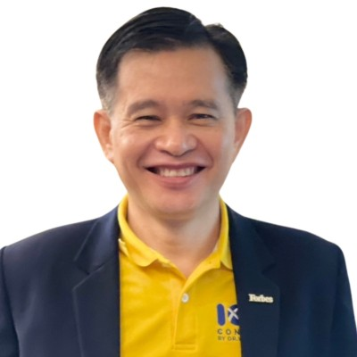

Dr. Wasit Prombutr
ผู้ก่อตั้งและประธานเจ้าหน้าที่บริหาร DECHRIT GROUP · โค้ชผู้บริหาร · ที่ปรึกษาด้านการพัฒนาองค์กรและ OKR Founder & CEO, DECHRIT GROUP · Executive Coach · Organization Development & OKR Consultant
ดร.วสิษฐ์ พรหมบุตร ทำงานในฐานะ Pracademic คือเชื่อมความเข้มงวดทางวิชาการเข้ากับการปฏิบัติจริงของผู้บริหาร บนจุดตัดของศาสตร์ภาวะผู้นำ การเปลี่ยนแปลงองค์กร และการขับเคลื่อนสู่ผลลัพธ์ ตลอดกว่า 30 ปี ได้ทำงานร่วมกับผู้บริหารระดับสูงและผู้กำหนดนโยบายเพื่อสร้างการเติบโตและผลการดำเนินงานที่วัดผลได้
ในฐานะผู้ก่อตั้งและประธานเจ้าหน้าที่บริหาร DECHRIT GROUP เป็นผู้นำระบบนิเวศที่เสริมพลังผู้นำ ยกระดับการดำเนินงาน และพัฒนาชุมชน เป็นผู้เขียนหนังสือ “Coach-erPreneur” และมีผลงานตีพิมพ์ในวารสารวิชาการกลุ่ม TCI and Scopus (Peer-reviewed)
ตำแหน่งศาสตราจารย์เกียรติคุณ
ตำแหน่งเกียรติคุณที่มอบเพื่อเชิดชูเกียรติและสะท้อนการยอมรับในความรู้ ความเชี่ยวชาญ ประสบการณ์ หรือผลงานที่มีคุณูปการต่อแวดวงวิชาการ วิชาชีพ หรือสังคมในระบบมหาวิทยาลัยอเมริกัน และสหภาพยุโรป (Non-Regular Professorships / Irregular Officers (Non-Regular Faculty Members) in the American, European Union System)
Dr. Wasit Prombutr is a Pracademic, bridging academic rigor with executive practice at the intersection of leadership science, transformation and execution. Over 30 years, he has worked with C-suite leaders and policymakers to drive measurable growth and performance.
As Founder & CEO of DECHRIT GROUP, he leads an ecosystem that empowers leaders, optimizes execution and transforms communities. He is the author of “Coach-erPreneur” and has published in TCI and Scopus (Peer-reviewed) journal networks.
Honorary professorships
Honorary distinction conferred in recognition of professional, academic, or societal contributions (Non-Regular Professorships / Irregular Officers (Non-Regular Faculty Members) in the American, European Union System).
ลิงก์ไปยังหน้าทะเบียนบนเว็บไซต์ของหน่วยงานผู้รับรองโดยตรง เพื่อให้ตรวจสอบได้Each link opens the issuing organization’s own registry page for independent verification.
จัดตั้งตามระเบียบสำนักนายกรัฐมนตรีว่าด้วยการพัสดุ พ.ศ. 2535 · ระบบไม่มีลิงก์ตรงไปยังรายการ โปรดค้นด้วยเลขทะเบียน 5782Established under the Prime Minister’s Office Regulation on Procurement B.E. 2535 (1992). No direct link; search by registration no. 5782.
ระบบไม่มีลิงก์ตรงไปยังรายการ โปรดค้นด้วยเลขทะเบียนข้างต้นThe registry has no direct link; search using the registration number above.
ลิงก์ไปยังฉบับเต็มบนคลังของวารสารหรือมหาวิทยาลัยLinks open the full text on the journal or university repository
ดูสารบัญฉบับ Vol. 5 No. 2 (2019) ↗Issue table of contents, Vol. 5 No. 2 (2019) ↗
ดูหน้าวารสารฉบับปีที่ 9 ฉบับที่ 4 ↗Journal issue page, Vol. 9 No. 4 ↗
รางวัลระดับนานาชาติและบทความที่เผยแพร่ พร้อมลิงก์ไปยังแหล่งต้นทางInternational recognition and published articles, linked to the original sources
Forbes.com Executive Profile 2023 (PDF) ↗Forbes.com Executive Profile 2023 (PDF) ↗
ที่ปรึกษาและคณะกรรมการAdvisory & boards
ใบรับรองวิชาชีพMaster credentials
การศึกษาEducation
ระบบนิเวศ 4 เสาหลักFour core pillars
ที่ปรึกษาด้านการบริหารและการเปลี่ยนแปลงเชิงกลยุทธ์ระดับองค์กรEnterprise-grade management consulting and strategic transformation
โค้ชและเมนทอร์ผู้บริหารระดับสูง และการยกระดับผลการปฏิบัติงานเชิงพฤติกรรมC-suite executive coaching, mentoring and behavioral performance optimization
การบริหารมุ่งผลสัมฤทธิ์และการนำ OKR ไปใช้เพื่อความคล่องตัวResults-Based Management and OKR implementation for agility
การพัฒนาเมือง เมืองแห่งการเรียนรู้ และเศรษฐกิจสร้างสรรค์ที่เปลี่ยนมรดกท้องถิ่นเป็นพลังเศรษฐกิจUrban development, Learning Cities and creative-economy frameworks that turn local heritage into economic drivers
รูปแบบความร่วมมือHow we can collaborate